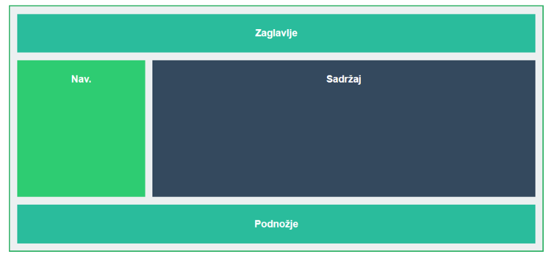

Ovdje je prikazano poravnanje i automatska prilagodba stavki unutar reda.
Elementi su smješteni pomoću svojstva grid template areas.
3. Klasični rasporedi (Float Columns)
Prije Flexboxa i Grida koristio se Float za bočno pozicioniranje elemenata. **Multi-column** omogućuje pakiranje sadržaja u stupce.